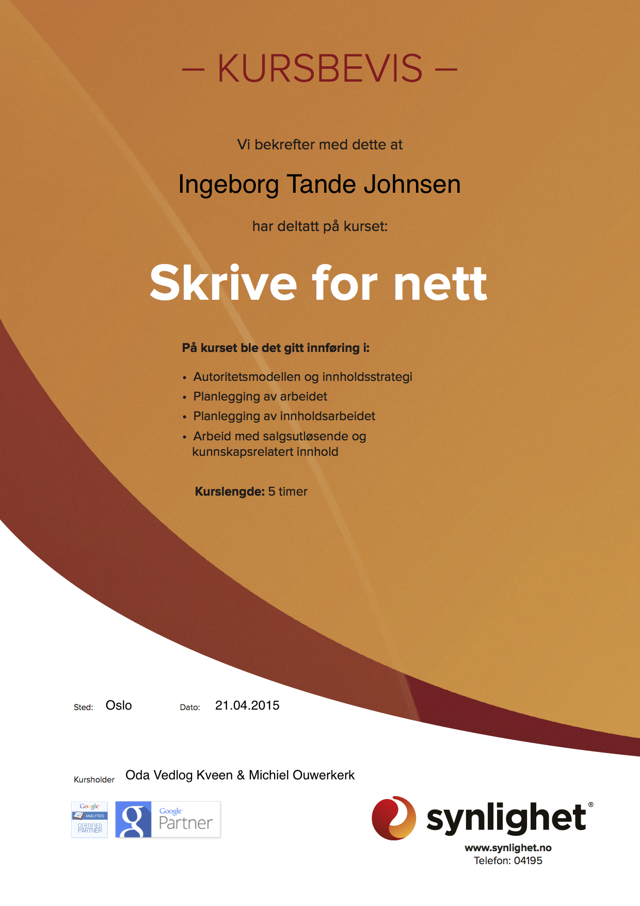

Interaksjonsdesigner med et godt øye for Universell Utforming, Konseptutvikling, og Webstrategi!
Jeg er på jakt etter nye utfordringer! Har du/dere en utfordring til meg?
Jeg brenner, og kan bidra følgende:
- Kvalitetssikring av Universell Utforming
- Konseptutvikling for nettjester og generell web
- Testing av nettjenester og lage brukertester
- Skrive informasjonsarkitektur og annen web dokumentasjon – definere en god webstrategi
- Enkel skripting (Grunnleggende HTML5 og CSS3)
Jeg er heller ikke redd for å:
- Ta ansvar
- Utfordre mine kolleger eller andre i henhold til utforming av en strategi til en nettjeneste.
- Holde presentasjoner - NB! Jeg vil helst snakke om fag, og jeg holder bedre presentasjoner på norsk enn engelsk.
Jeg gjør mitt ytterste for at webstrategien skal bli så god som mulig, og for at kunden/firma skal bli fornøyd!
Erfaring:
Programkonsulent i Kikora AS
Bidrar på konseptuelt og strategisk nivå, med hovedfokus på tilpassing til brukere av Kikora. Dette innebærer blant annet WCAG (Web Content Accessibility Guidelines) kvalitetssikring og testing. Generell testing av Kikora hører også til arbeidsoppgavene.
Arbeidslederrolle i BPA (Brukerstyrt Personlig Assistanse):
Organisering av møter, jobbintervju og veiledning av arbeidsoppgaver. Her er det også viktig å beherske personalpolitikk. Denne jobben har jeg hatt siden 2009 og frem til september 2014.
Kurs:
Kursbevis - Skrive på nett:
- Synlighet – Skrive for nett - Synlighet - Dato: 21.04.2015
- MediaLT – Nettsider som funker (kurs i Universell Utforming) MediaLT - Dato: 25.03.15
- Idium – Introduksjon til Digital Markedsføring - Idium - Dato: 02.02.15
- Netlife Research - Slik lager du nettsider som funker - Netlife Research - Dato: 25.11.2014
Utdanning:

Norges Kreative Høyskole (2012 - 2014):
Studie: Interaksjonsdesign
Oppdal Videregående Skole (2008 - 2012):
Linje: Studiespesialisering
The Montgomery Academy, Alabama USA (2007 - 2008):
Tok Digital Peresentation Design, Engelsk og Fransk